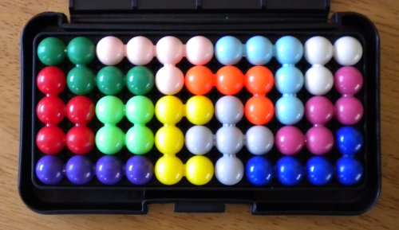
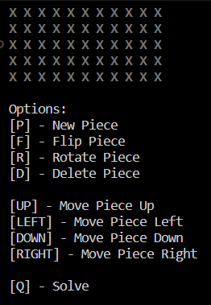
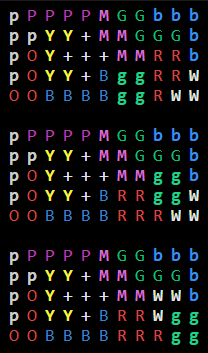

def tryPlace(pieces, opens):
# Next piece to place is the first piece in pieces
p = pieces[0]
# For each orientation
for j in range(p.flips):
for i in range(p.rots):
# Copy the opens to a local copy for the current piece
pc = opens.copy()
for c in pc:
# For each open spot,
# 1 - move to the open spot,
# 2 - if that is a valid placement, place the piece, then tryPlace next piece
# 3 - remove the piece and try next spot
# Move to open and check placement
p.moveToOpen(c)
if(board.isValidPlacement(p)):
board.placePiece(p)
#If there are more pieces to place, place the next piece
if(len(pieces) > 1):
# Copy the open spaces minus the spaces being taken up by the current piece
temp = opens.copy()
for t in p.shape:
temp.remove(t)
# Place the next piece
tryPlace(pieces[1:], temp)
else:
# Placed the last piece! Print the board
print(board)
# There aren't anymore solutions with this current placement, remove piece and try next
board.removePiece(p)
# Rotate the piece to try that solution
p.rotate90()
# Flip the piece to try that solution
p.flip()